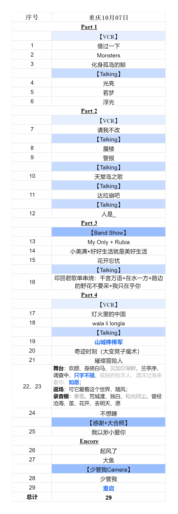

周深9.29Hz十周年巡回演唱会Talking
前言
整理本稿动机（WIP）
关于作者(WIP)
致谢(WIP)
1
2024.05.18上海场（WIP）
2
2024.05.19上海场（WIP）
3
2024.06.01深圳场（WIP）
4
2024.06.15成都场（WIP）
5
2024.07.13贵阳场（WIP）
6
2024.07.27武汉场（WIP）
7
2024.08.10南京场（WIP）
8
2024.08.11南京场（WIP）
9
2024.08.23杭州场
9.1
Part1
9.2
Part2
9.3
Part3
9.4
Part4
9.5
Part5
10
2024.08.24杭州场
10.1
Part1
10.2
Part2
10.3
Part3
10.4
Part4
10.5
Part5
11
2024.09.07沈阳场
11.1
Part1
11.2
Part2
11.3
Part3
11.4
Part4
11.5
Part5
12
2024.09.21北京场
12.1
Part1
12.2
Part2
12.3
Part3
12.4
Part4
12.5
Part5
13
2024.09.22北京场
13.1
Part1
13.2
Part2
13.3
Part3
13.4
Part4
13.5
Part5
14
2024.10.06重庆场
14.1
Part1
14.2
Part2
14.3
Part3
14.4
Part4
14.5
Part5
15
2024.10.07重庆场
15.1
Part1
15.2
Part2
15.3
Part3
15.4
Part4
15.5
Part5
附录
A
9.29Hz巡回演唱会歌单
B
9.29Hz巡回演唱会彩带
C
我是如何一步一步掉入米缸的
Published with bookdown
周深9.29Hz十周年巡回演唱会Talking
第15场、
2024.10.07重庆场

图15.1: 2024周深9.29Hz巡回演唱会2024.10.07重庆第二场歌单